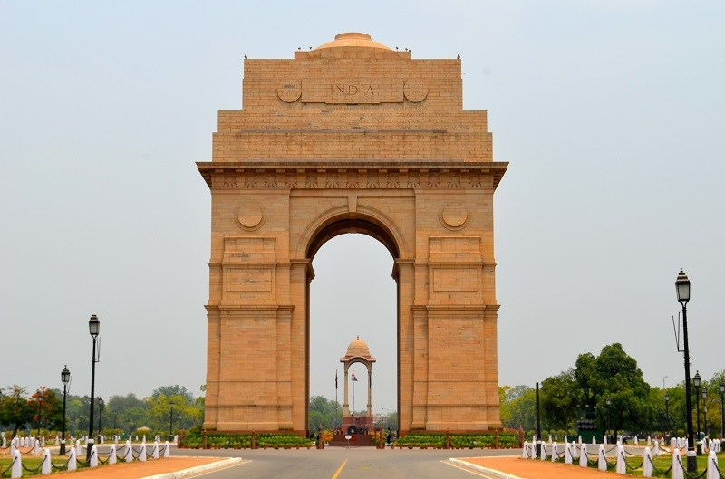
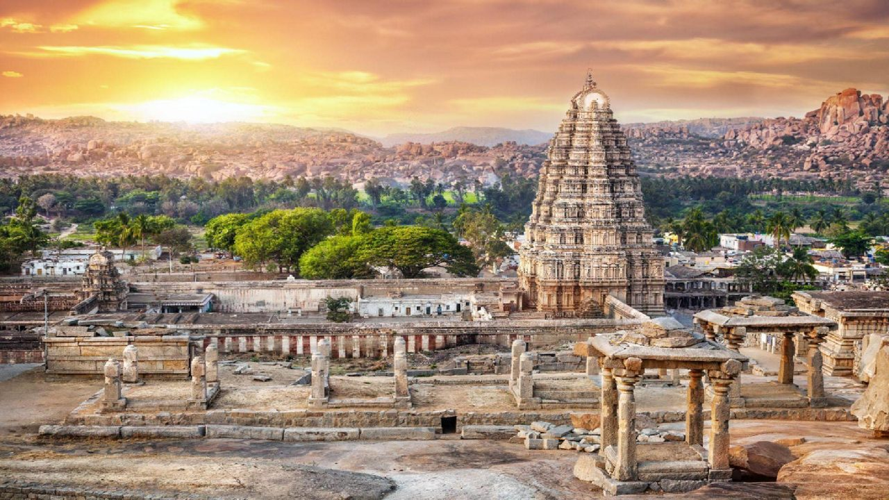
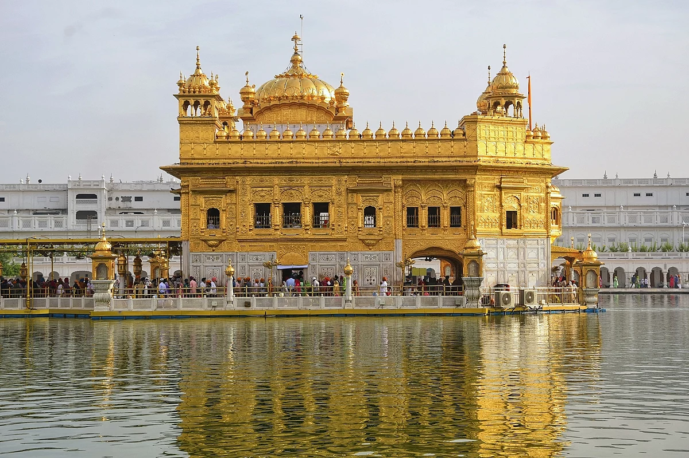

Click on a Place to Know More

Palolem Beach, Goa
Palolem Beach is one of the cleanest and most beautiful beaches in South Goa. Surrounded by palm trees and peaceful waters, it’s perfect for swimming, dolphin spotting, and sunsets. The beach is known for its calm waves and vibrant shacks. Best time to visit: November to February.

India Gate, Delhi
India Gate is a 42-metre tall war memorial located in New Delhi. It honors the 70,000 Indian soldiers who lost their lives during World War I. At night, it glows beautifully and is surrounded by gardens, making it a favorite picnic spot. It is also home to Amar Jawan Jyoti, the flame of the immortal soldier.

Hampi, Karnataka
Hampi is a UNESCO World Heritage site known for its ancient temples, stone ruins, and giant sculptures. It was once the capital of the Vijayanagara Empire. Tourists come to see the Virupaksha Temple, stone chariots, and the unique boulder-filled landscapes. A paradise for history lovers!

Tea Gardens, Kerala
The tea gardens of Munnar in Kerala are known for their greenery, misty hills, and peaceful environment. You can walk between tea plantations, visit tea museums, and enjoy fresh mountain air. Kerala is also called "God’s Own Country" because of its natural beauty.

Taj Mahal, Agra
The Taj Mahal was built by Mughal Emperor Shah Jahan in memory of his wife Mumtaz Mahal. It is made of white marble and is considered the symbol of eternal love. It is also one of the Seven Wonders of the World and attracts over 7 million tourists every year.

Golden Temple, Amritsar
The Golden Temple is the most sacred shrine of Sikhism. Its upper floors are covered with gold and it is surrounded by a beautiful lake called the Amrit Sarovar. The temple is open to people of all faiths and serves free meals (Langar) to thousands every day.